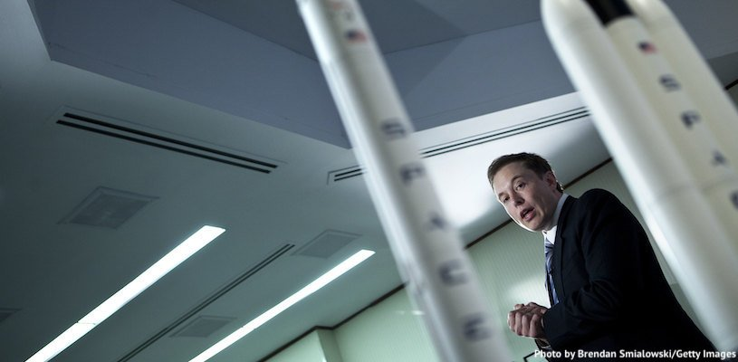
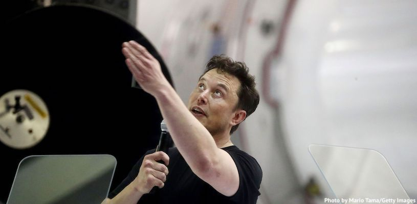
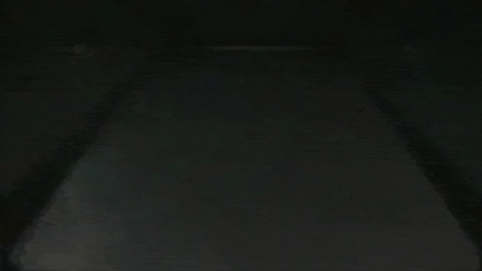
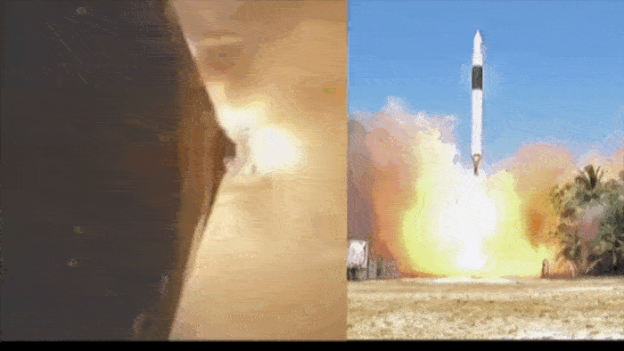
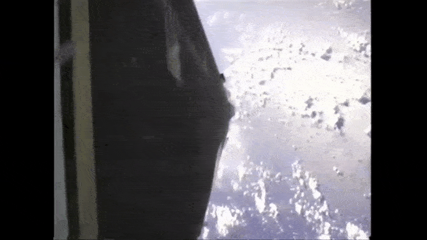
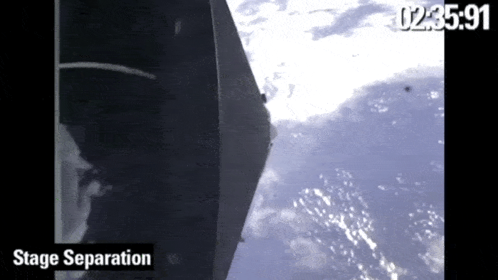
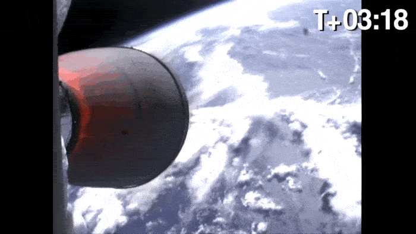
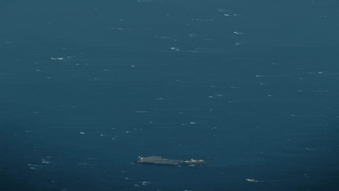

SpaceX (Space Exploration Technologies Corporation) – американская компания, которая делает и запускает космические ракеты. Её основал Илон Маск (CEO Tesla) в 2002 году, чтобы уменьшить мировые расходы на космические полёты.
SpaceX участвует во многих программах NASA и с их подачи разработала первый частный корабль – Dragon. Все испытания двигателей и систем проводятся в Техасе, а стартовые площади дают космодромы и военно-воздушные базы в Калифорнии, Флориде и на мысе Канаверал. SpaceX успела заключить более 100 частных и государственных контрактов на запуски.

Это первая частная компания, которая составляет реальную конкуренцию государству в космической отрасли. SpaceX проводит исследования за свои деньги. Они запускают ракеты дешевле, в отличие от NASA или Роскосмоса. Планируется, что в будущем один запуск будет стоить всего $5-7 млн. Сейчас эта сумма около $60 млн для частных запусков и $80-120 млн для правительственных.
SpaceX делает многоразовые космические аппараты. Ступени ракет-носителей возвращаются после расстыковки на землю и могут быть использованы снова, поэтому себестоимость запуска снижается в два раза. Чтобы ещё снизить цены, SpaceX придумала посадку первых ступеней на плавучие платформы, которые управляются дистанционно и без экипажа.
Несмотря на 6-тысячный штат (для примера в NASA 18 тысяч работников), SpaceX сама проектирует, собирает, тестирует ракеты и разрабатывает двигатели для своих носителей.

Компания занимается снабжением космических станций, запуском спутников, выполняет научные и военные миссии правительства США. SpaceX летает на околоземную орбиту, но Илон Маск мечтает колонизировать Марс и отправлять туристов на Луну.
Название этой компании – AMD. Это, по сути, единственный конкурент Intel на рынке CPU с архитектурой х86, будь то настольные, мобильные или серверные решения.
Крупная цель SpaceX – развить межпланетную транспортную систему. Для этого они разрабатывают многоразовый космический транспорт. Звездолеты должны не только сделать колонию на Марсе, но и возить людей из любой точки Земли в другую не дольше, чем за 40 минут.
Ещё одна миссия – дать всей планете высокоскоростной интернет. Для этого компания хочет разместить в 2019-2024 гг. на околоземной орбите почти 4,5 тысячи спутников.
Самая многочисленная серия ракет-носителей SpaceX – Falcon (так назывался звездолёт из «Звёздных войн»).
Falcon 1
Это первая частная ракета лёгкого класса, вышедшая на околоземную орбиту. В первой ступени ракеты была парашютная система, за счёт которой конструкция должна приземляться в океан после расстыковки. Но за пять запусков возвращения первой ступени не состоялось.
Первый запуск – 24 марта 2006 года – завершился неудачей из-за пожара: из двигателя начал вытекать керосин (проржавели алюминиевые накидные гайки от датчика давления), и ракета рухнула в воду.

Второй запуск – 21 марта 2007 года – не удался из-за проблем уже со второй ступенью (её двигатель отключился на 474 секунде полёта).

Третий запуск – 3 августа 2008 года – тоже закончился провалом: впервые был использован усовершенствованный двигатель Merlin 1С, а не Merlin 1A, как раньше, и команда не учла его импульс последействия. В результате первая ступень ударила вторую во время расстыковки.

Четвёртый запуск ракеты-носителя был удачным. 28 сентября 2008 года Falcon 1 доставила на орбиту макет полезной нагрузки.

Финальный запуск – 14 июля 2009 года – завершился успешной доставкой на орбиту первого коммерческого малайзийского спутника RazakSAT.

Группа одноразовых и многоразовых ракет тяжёлого класса. Цифра «9» указывает на число жидкостных двигателей в первой ступени. С момента первого запуска (а всего их было 70) ракета пережила несколько модификаций. Первый полёт был 4 июля 2010 года.
Крупных неудач с запусками Falcon 9 было немного. 28 июня 2015 года возникла полётная аномалия – стойка крепления баллона с газом разрушилась, и произошла утечка гелия. Давление в баке повысилось, и ракета взорвалась.
1 сентября 2016 года на стартовой площадке SpaceX (мыс Канаверал) взорвался бак с жидким кислородом. Пожар уничтожил ракету за 2 дня до её официального запуска.
Отличительная черта Falcon 9 – первая ступень, которая возвращается на Землю и может быть использована повторно. Успешная посадка ступени на воду состоялась 18 апреля 2014 года.
8 апреля 2016 года впервые за всю историю ракетостроения ступень приземлилась на морскую (плавающую) платформу.
